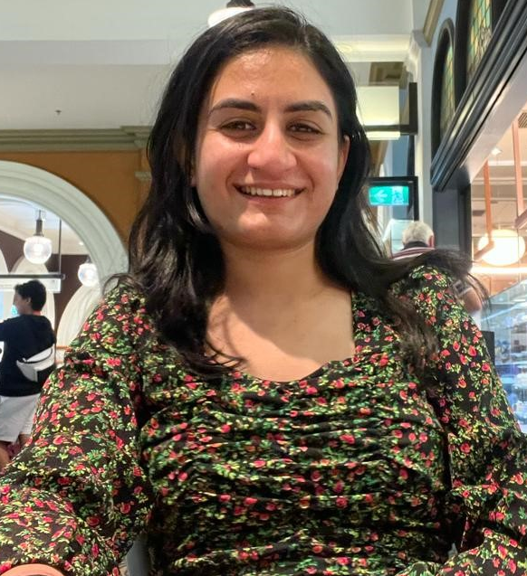

Pankti Panchal

Summary
Dynamic web developer with over 2 years of experience in designing, developing, and maintaining responsive web applications. Proficient in HTML, CSS, JavaScript, and modern frameworks. Skilled in transforming complex requirements into user-friendly, efficient solutions.
Education
- Western Sydney University : Masters of Information and Communications Technology (2019-2021)
- L.J. Institute of engineering and technology : Bachelors of Computer Engineering (2013-2017)
Work Experience
Data Analyst Intern (2021-2022) : ICD ASIA PACIFIC PVT LTD, Australia
- Trained neural network model for element detection on engineering drawings.
- Preparing data for neural network training by collecting, cleaning, and organizing relevant datasets.
- Processed data exploration across various suburbs in Urban Victoria to analyze and understand the data.
Jr. Software Developer (2017-2018): DIGINIX MEDIA PVT LTD, India
- Write clean, well-documented code using HTML, CSS, JavaScript, and relevant libraries or frameworks.
- Assist in the development of new features and maintenance of existing websites and applications.
- Perform routine debugging and testing to identify and resolve issues.
Skill
- HTML/CSS
- JavaScript
- Python
- MySQL
- Microsoft Excel
Certifications
- Completed Web Designing & Advanced Java Training
- Underwent Professional training in C++ & Java
Other
Contact Me
LinkedIn Profile
gitHub